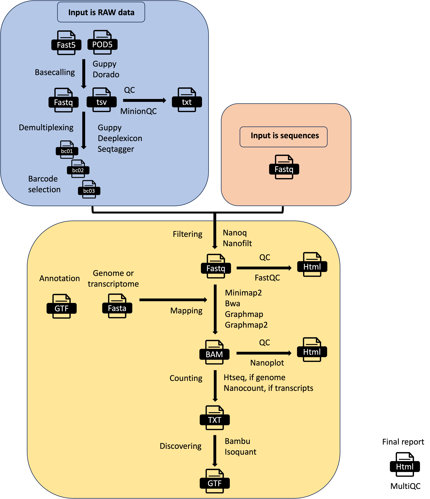

MOP_PREPROCESS
This pipeline takes as input the raw fast5 reads - single or multi - and it produces several outputs (basecalled fast5, sequences in fastq format, aligned reads in BAM format etc). The pre-processing pipeline can perform base-calling, demultiplexing (optional), filtering, quality control, mapping to a reference (either a genome or a transcriptome), feature counting, discovery of novel transcripts, and it generates a final report with the performance and results of each of the steps performed. It automatically detects the kind of input fast5 file (single or multi-sequence). It can also support the new pod5 format but it won’t output basecalled fastq useful for the other pipelines. The basecalling can be performed with guppy or dorado and the demultiplexing with either guppy, deeplexicon or seqtagger. Basecalled fastq and Fast5 files can be demultiplexed as well. You can restrict the number of barcodes by indicating a file with barcode list using the barcodes parameter.
{kind=link}
Input Parameters
The input parameters are stored in yaml files like the one represented here:
# Parameters
# Needed for fast5 or pod5 input. Please use this parameter also for pod5 (like *.pod5)
fast5: "${projectDir}/../data/fast5_rna_dem/**/*.fast5"
## This can be empty but then you need to add specify kit and flowcell via command line inside pars_tools
conffile: "final_summary_01.txt"
## Can be wither guppy or dorado
basecalling: "guppy"
## Can be OFF / cuda10 / cuda11. Newer version of GUPPY may require cuda11
GPU: "cuda11"
demultiplexing: "seqtagger"
demulti_fast5: "YES"
### Number of fast5 basecalled per parallel job
granularity: 1
### File with the list of accepted barcodes. It can be empty
barcodes: ""
# Needed for fastq input
fastq: ""
# Common
reference: "/db/gencode/human/release_38/GRCh38.primary_assembly.genome.fa.gz"
## Can be transcriptome / genome
ref_type: "genome"
annotation: "/db/gencode/human/release_38/gencode.v38.tRNAs.gtf.gz"
## command line options
pars_tools: "${projectDir}/tool_opts/drna_tool_seqtagger_opt.tsv"
## Cut off quality for QC
qualityqc: 5
## Can be nanoq / nanofilt
filtering: "nanoq"
## Can be graphmap / graphmap2 / minimap2 / bwa
mapping: "minimap2"
## Can be nanocount for transcriptome / htseq for genome
counting: "htseq"
## Can be NO / bambu / isoquant
discovery: "NO"
## Convert bam to cram
cram_conv: "NO"
subsampling_cram: 50
hook: ""
email: ""
output: "${projectDir}/outfolder_rnadem"
You can change them by editing this file or using the command line as explained in the next section.
Tip
In the case of pod5 as input files, you can use them as they were fast5 with dorado or guppy >= 6.5.x. The only limitation is that you cannot obtain basecalled fast5 so you cannot use the other pipelines that need fast5 as input files.
How to run the pipeline
Before launching the pipeline, the user can decide which containers to use: either docker or singularity [-with-docker / -with-singularity].
Then, to launch the pipeline, please use the following command by specifying the path of the yaml parameter file:
nextflow run mop_preprocess.nf -with-singularity -params-file params.yaml > log.txt
You can run the pipeline in the background by adding the nextflow parameter -bg:
nextflow run mop_preprocess.nf -params-file params.yaml -with-singularity -bg > log.txt
You can change the parameters either by changing the yaml config file or by feeding the parameters via command line:
nextflow run mop_preprocess.nf -with-singularity -params-file params.yaml -bg --output test2 > log.txt
You can specify a different working directory with temporary files:
nextflow run mop_preprocess.nf -with-singularity -params-file params.yaml -bg -w /path/working_directory > log.txt
You can use different profiles for running the pipeline in different environments. We have one set up for HPC using the SGE scheduler:
nextflow run mop_preprocess.nf -with-singularity -bg -params-file params.yaml -w /path/working_directory -profile cluster > log.txt
One for HPC using the slurm scheduler
nextflow run mop_preprocess.nf -with-singularity -bg -params-file params.yaml -w /path/working_directory -profile slurm > log.txt
One for emulating the new M1 processor for Apple:
nextflow run mop_preprocess.nf -with-singularity -bg -params-file params.yaml -w /path/working_directory -profile m1mac > log.txt
or you can run the pipeline locally:
nextflow run mop_preprocess.nf -with-singularity -bg -params-file params.yaml -w /path/working_directory -profile local > log.txt
Note
In case of errors you can troubleshoot by seeing the log file (log.txt) for more details. Furthermore, if more information is needed, you can also go to the intermediate directory indicated in the log and check both the .command.log and .command.err files.
Tip
Once the error has been solved or if you change a specific parameter, you can resume the execution with the Netxtlow parameter - resume (only one dash!). If there is an error, the pipeline will resume from the process that had the error and proceed with the rest. If you change a parameter, only the processes affected by this parameter will be re-run.
...
[warm up] executor > crg
[9d/82eeaa] Cached process > checkRef (Checking yeast_rRNA_ref.fa.gz)
[33/b8d053] Submitted process > BASECALL:GUPPY_VERSION:getVersion
[e5/e5c990] Submitted process > BASECALL:GUPPY65_BASECALL:baseCallNew (mod---2)
[b5/0997da] Submitted process > BASECALL:GUPPY65_BASECALL:baseCallNew (wt---1)
[fb/6353d6] Submitted process > SEQFILTER:NANOQ_FILTER:filter (mod---2)
...
Note
To resume the execution, temporary files generated previously by the pipeline must be kept. Otherwise, the pipeline will re-start from the beginning.
tool_opts
The command line options for each tool used in the pipeline are stored within specialized tsv files stored within the tool_opts folder. Here is an example:
#step tool extrapars
basecalling dorado "rna002_70bps_hac@v3"
basecalling guppy ""
demultiplexing seqtagger "-k b100"
demultiplexing deeplexicon ""
demultiplexing guppy ""
filtering nanofilt ""
filtering nanoq ""
mapping graphmap ""
mapping graphmap2 "-x rnaseq"
mapping minimap2 "-uf -ax splice -k14"
mapping bwa ""
counting htseq "-a 0"
counting nanocount ""
discovery bambu ""
The first column indicates the processing step as basecalling or demultiplexing etc. Some tools such as Guppy can be used for more processing steps. Several pre-compiled tool_opts files are stored within the folder tool_opts.
Note
Readucks is run after guppy demultiplexing. It refines the demultiplexing generating different fastqs
Model libraries for specific tools
The following folders are available for the respective tools. Some models are already pre-installed-
- deeplexicon_models
resnet20-final.h5
pAmps-final-actrun_newdata_nanopore_UResNet20v2_model.030.h5
pAmps-rep2-4-train1_newdata_nanopore_UResNet20v2_model.039.h5
- dorado_models
- seqtagger_models
b04_RNA002
b04_RNA004
Note
You need to download the models you want to use in case they are not already available. For instance, if you need another model for dorado you need to do:
dorado download --model MODELNAME
You also need to add the dedicated parameter within the tool_opts file for the specific tool as:
basecalling dorado "rna002_70bps_hac@v3"
demultiplexing seqtagger "-k b100"
demultiplexing deeplexicon "-f multi -m resnet20-final.h5"
Note
You need to copy the model in the corresponding folder and indicate just the model name. You don’t need the absolute path.
Barcodes
You can select the barcodes you are interested in by writing them down in a text file as in this example. The format is samplename—barcodeID
anna---bc_104
anna---bc_102
The sample id is given by either the folder containing the fast5 files or the basename of the fastq files. So, if your files are in a folder named myfiles, it will be:
myfiles---bc_1
myfiles---bc_2
myfiles---bc_3
Note
The naming convention of the different barcodes is decided by each tool, so seqtagger will produce bc_1, bc_2, etc. while guppy will produce barcode01, barcode02, etc.
Results
Several folders are created by the pipeline within the output directory specified by the output parameter:
fast5_files: Contains the basecalled multifast5 files. Each batch contains 4000 sequences.
fastq_files: Contains one or, in case of demultiplexing, more fastq files.
QC_files: Contains each single QC produced by the pipeline.
alignment: Contains the bam file(s).
cram_files: Contains the cram file(s).
counts: Contains read counts per gene / transcript if counting was performed.
assigned: Contains assignment of each read to a given gene / transcript if counting was performed.
report: Contains the final multiqc report.
assembly: It contains assembled transcripts.
Note
MOP3 will automatically detect the version of guppy and modify the parameters accordingly. You don’t need to add any extra parameter as in MOP2.